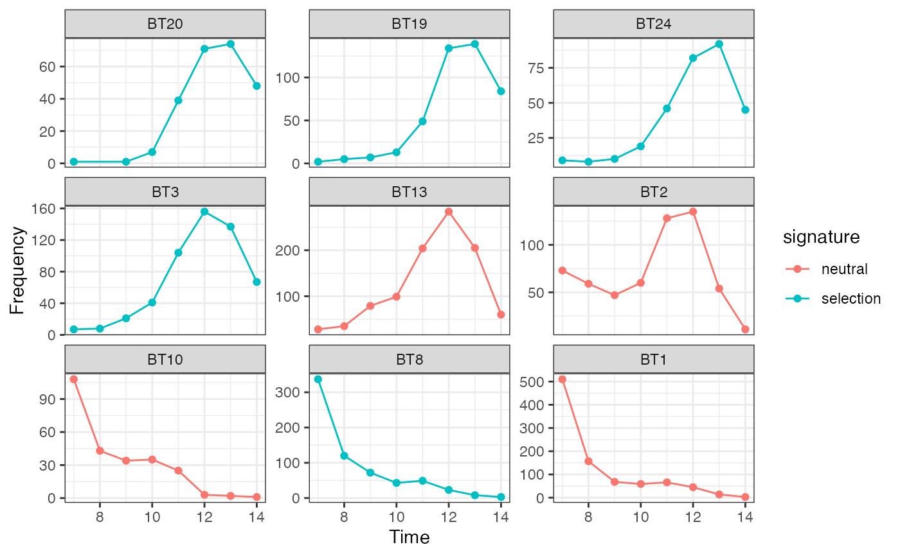
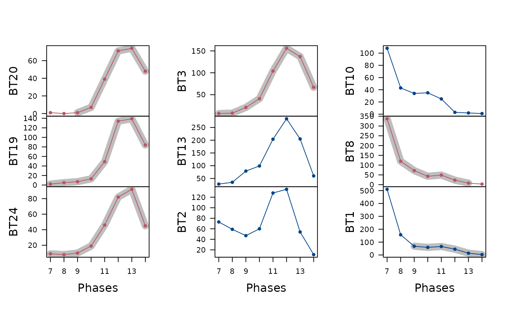

Frequency Increment Test
fit(object, dates, ...)
# S4 method for CountMatrix,missing
fit(object)
# S4 method for CountMatrix,numeric
fit(object, dates)Arguments
- object
A arkhe::CountMatrix object.
- dates
A
numericvector of dates.- ...
Currently not used.
Value
An IncrementTest object.
Details
The Frequency Increment Test (FIT) rejects neutrality if the distribution of normalized variant frequency increments exhibits a mean that deviates significantly from zero.
References
Feder, A. F., Kryazhimskiy, S. & Plotkin, J. B. (2014). Identifying Signatures of Selection in Genetic Time Series. Genetics, 196(2): 509-522. doi: 10.1534/genetics.113.158220 .
Author
N. Frerebeau
Examples
data("merzbach", package = "folio")
## Coerce the merzbach dataset to a count matrix
## Keep only decoration types that have a maximum frequency of at least 50
keep <- apply(X = merzbach, MARGIN = 2, FUN = function(x) max(x) >= 50)
counts <- as_count(merzbach[, keep])
## Group by phase
## We use the row names as time coordinates (roman numerals)
dates <- as.numeric(utils::as.roman(rownames(counts)))
## Frequency Increment Test
freq <- fit(counts, dates)
## Plot time vs abundance and highlight selection
plot(freq)

plot(freq, roll = TRUE, window = 5)
